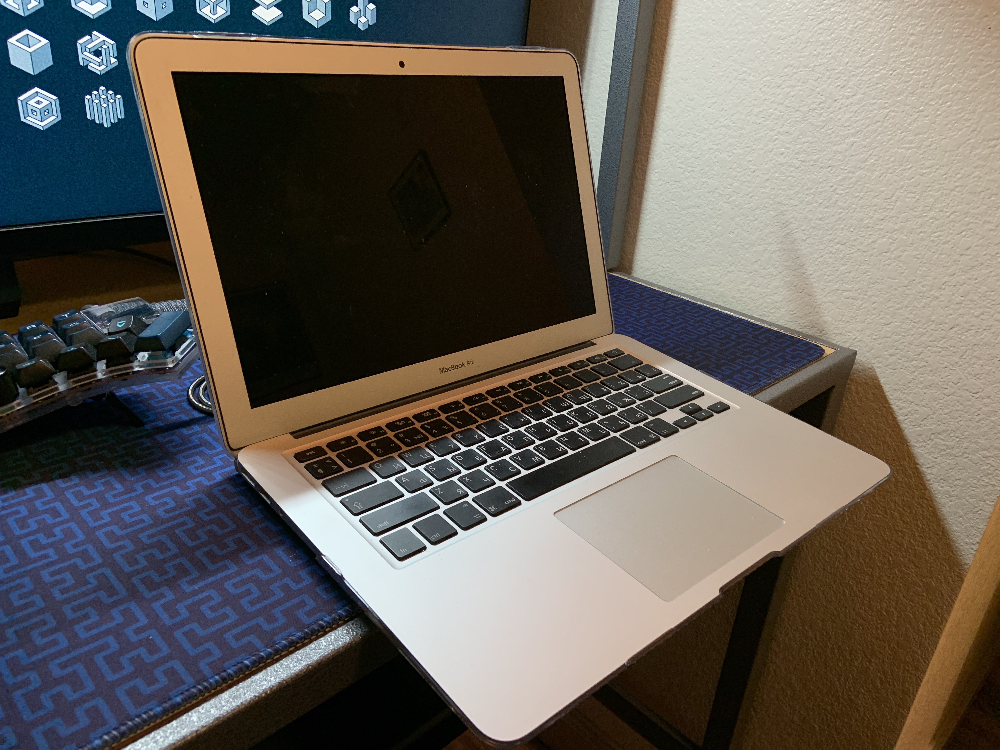
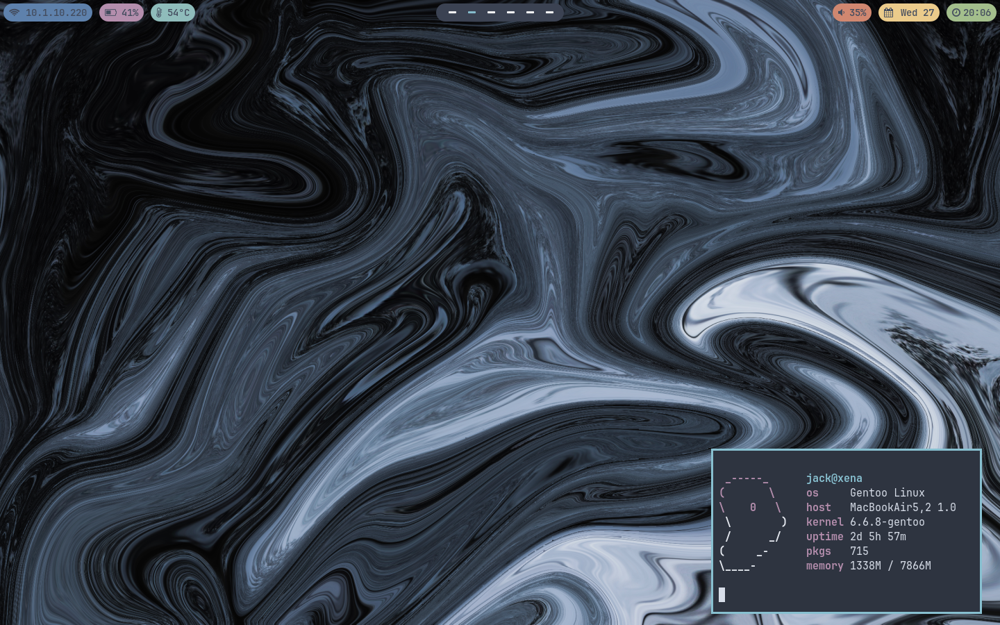
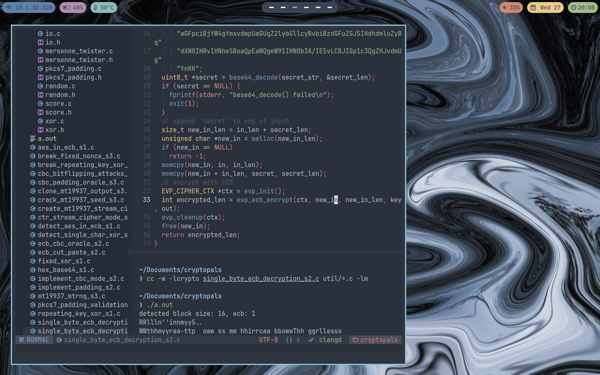
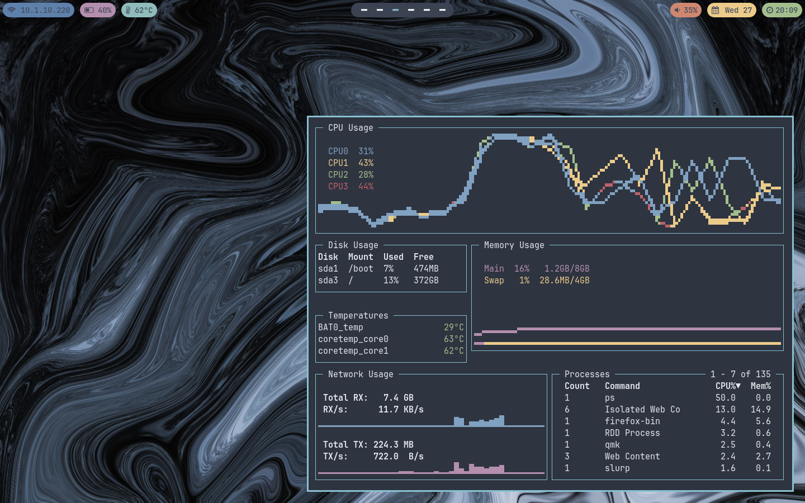
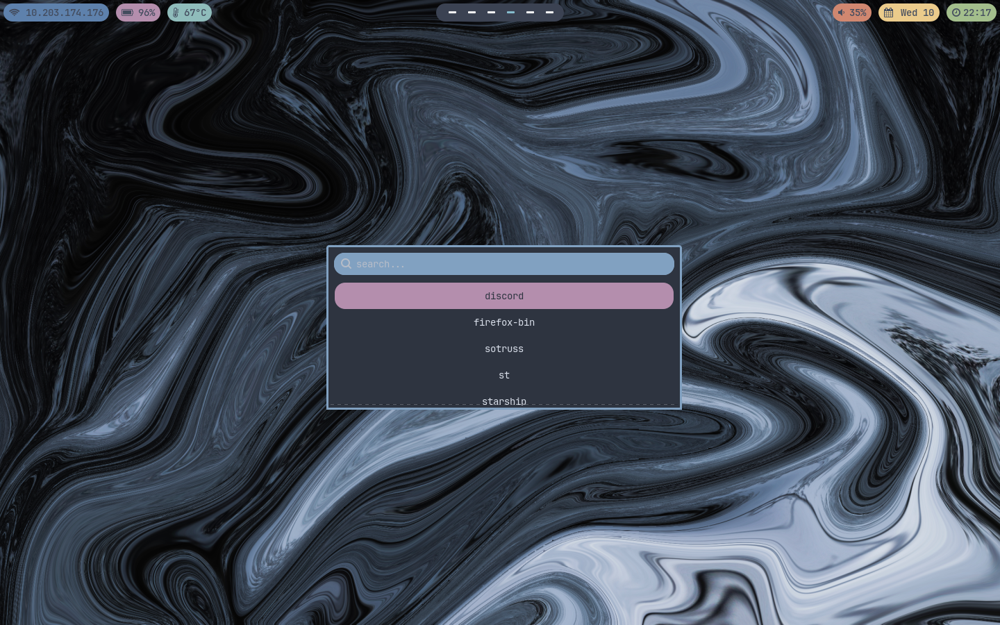
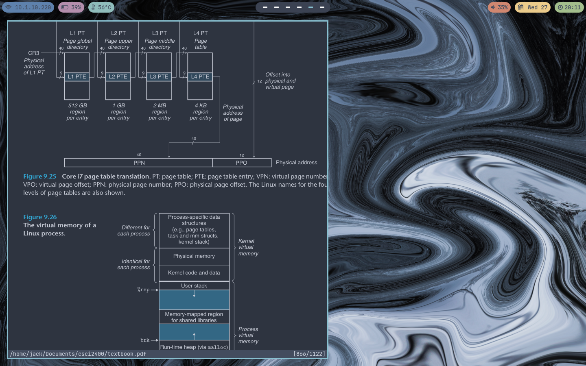
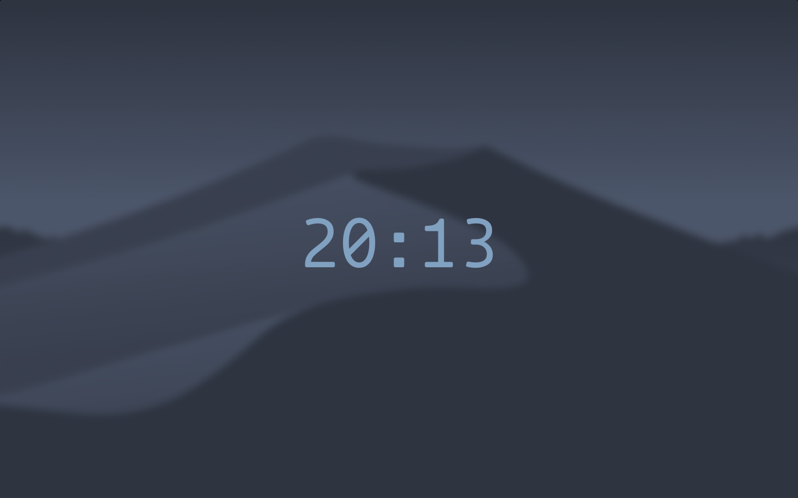

<--
Gentoo Linux on Macbook Air
This page covers various features, nuances, notes, etc. of my
Gentoo system running on a 2012 Macbook Air. This laptop was
initially bought as a tinkering project for $150USD. While this
is not the most powerful device, it is suitable for all the work
I encounter on a daily basis and is used as my primary system. My
intentions for this system are reliability and speed most importantly.
With this comes a tidy OS with quite few kernel parameters set,
fine-tuned USE flags, and a usable system that I'm very familiar with.
All my configuration can be found on my Github.


hardware features
kernel
bootloader
portage
applications
miscellaneous
screenshots
Hardware Features
This is a Macbook Air 5,2 (EMC 2559) fit with the following (see
lspci,
lsusb)
- Intel i7 3667U at 3.2 GHz with 4 cores (lscpu)
- 8 GB RAM
- 1 TB NVMe Samsung 970 SSD (used adapter)
- Intel 3rd gen graphics
- Broadcom BCM43224 802.11 Network Controller (bcma-pci-bridge driver)
- Broadcom BCM2046 Bluetooth
- Broadcom BCM5974 Touchpad
- Keyboard with backlight
- 13" 1440 x 900 LCD display
- 2x USB 2.0, SD card reader, & Thunderbolt port
Modifications
Since 2010, Apple Macbooks have used their proprietary SSDs
with non-standard connectors. When I bought this machine, it
came with a 128 GB Samgsung "blade" SSD which I was not very
keen on keeping. Luckily, there exists
adapters
which simply act as a bridge between a standard M.2 SSD and Apple's
connector. Installation was quite easy and the adapter has been
reliable since. This laptop also came with what I presume was the
original battery, as it lasted about 15 minutes after being charged
and would lose power randomly. A suitable
replacement
can be found roughly $50USD. With this, I get about 5 hours on
a full charge, mostly thanks to
TLP
and thermald. Now, if only the memory wasn't soldered directly to
the motherboard, or I could find the courage to
replace it.
Kernel
After spending many hours narrowing down kernel options enabled,
I have a 7.8 MB kernel image with ~4000 parameters set. Note,
this configuration is very hardware and user specific. I opted
for absolutely zero modules since I don't need any out-of-tree
hardware support. I also did not configure anything very drastically
in either direction, like extreme security, sacraficing usability, etc.
I chose to use
gentoo-sources
to provide kernel source as it contains some handy patches and is easy
to obtain via emerge. A base 6.7 kernel builds locally (remember, 4
cores) in approximately 17 minutes, which is not too much of a pain
when troubleshooting on bare metal. I also chose to omit an initramfs,
which means CPU microcode can/should be built directly into the kernel.
This can be achieved by first installing
sys-firmware/intel-microcode.
This is also a good time to add microcode signature to
/etc/portage/make.conf
$ iucode_tool -S -l /lib/firmware/intel-ucode/*
iucode_tool: system has processor(s) with signature 0x000306a9
microcode bundle 1: /lib/firmware/intel-ucode/06-3a-09
selected microcodes:
001/001: sig 0x000306a9, pf_mask 0x12, 2019-02-13, rev 0x0021, size 14336
# echo 'MICROCODE_SIGNATURES="-s 0x000306a9"' >> /etc/portage/make.conf
CPU's signature is found in bundle 1, so the filename to use is
/lib/firmware/intel-ucode/06-3a-09.
Ensure the following kernel options are set approximately, where the argument
passed to
CONFIG_EXTRA_FIRMWARE is the filename of our microcode
CONFIG_MICROCODE=y
CONFIG_FW_LOADER=y
CONFIG_EXTRA_FIRMWARE="intel-ucode/06-3a-09"
CONFIG_EXTRA_FIRMWARE_DIR="/lib/firmware"
Check dmesg for microcode output to ensure all was successful.
My specific configuation for this machine can be found at
6.7.4 .config
For
some more kernel related stuff, see
here.
Bootloader
Spoiler: there is none. For the duration of my time using Linux, I have used GRUB as my
bootloader across various systems. In my experience, it's been
ok, it does what it needs to, allows for extensive configuration
like theming and requiring a password. However, some time ago it
went kaput and despite manually setting the root partition in
/boot/grub/grub.cfg, it seems the incorrect value
was passed to the kernel at boot and the partition could not be found.
Every time I would reboot I would have to manually set it (which
is a handy trick to know nonetheless)
grub> ls
(hd0) (hd0,gpt0) (hd0,gpt1) (hd0,gpt2)
grub> ls (hd0,gpt1)/
vmlinuz vmlinuz.old
grub> root=(hd0,gpt1)
grub> linux /boot/vmlinuz root=/dev/sda3
grub> boot
Since this isn't a multiboot machine or anything, I can simply omit
GRUB and expose the kernel image as an EFI stub. First, the
following kernel options must be set
CONFIG_EFI=y
CONFIG_EFI_STUB=y
CONFIG_CMDLINE_BOOL=y
CONFIG_CMDLINE="root=PARTUUID=... ro"
The root must be set to the
PARTUUID value
of the root partition. Use
blkid to obtain this
Once kernel has been recompiled, copy the image to the EFI partition
and create a new boot entry. It is also wise to remove unneeded entries
to conserve space
# efibootmgr -b 1 -B
# cp arch/x86/boot/bzImage /boot/efi/gentoo/bzImage-x.y.z.efi
# efibootmgr -c -d /dev/sda -L "gentoo efi stub" -l "\efi\gentoo\bzImage-x.y.z.efi"
Reboot and the bootable system should be shown in Mac's EFI program
Portage
Profile
When initially setting this up, I opted for a multilib system as
I was still using some 32-bit programs at the time. Since, I have
switched to a no-multilib profile. Unlike adding multilib support
to a 64-bit only system, going from multilib to no-multilib is
quite easy.
# eselect profile list
...
[12] default/linux/amd64/17.1/no-multilib (stable)
...
# eselect profile set 12
# emerge -auDN @world
# emerge --depclean
It was pleasant to see 60+ packages removed after the switch. And
have much reduced overhead in my system overall.
Compiler
As Clang/LLVM has become more and more stable and is able to compile all
packages installed, I chose to switch the default compiler, linker
and other bits over from GCC. This is easy enough in
/etc/portage/make.conf.
CC="clang"
CXX="clang++"
AR="llvm-ar"
NM="llvm-nm"
RANLIB="llvm-ranlib"
If needed, a GCC fallback environment can be made containing the
previous variables, then applied to certain packages which may fail
under Clang via adding an entry in
/etc/portage/package.env.
Some advantagees of using Clang over GCC are slightly faster compilation
times and reduced memory usage, and potentially safer binaries overall.
USE Flags
My USE flags and related options are quite minimal. Global flags include
USE="alsa bluetooth clang dbus elogind gles2 jpeg png \
pulseaudio sdl udev wayland X -systemd -vulkan -nls"
ACCEPT_LICENSE="*"
ACCEPT_KEYWORDS="~amd64"
For reference, some primary features used on this system are
Wayland, Pipewire, elogind, and OpenRC. Since no-multilib already
has very few things enabled, not many flags needed to be disabled.
Applications
Packages in my world file can be found in
package list,
and list of all system packages in
full package list.
Some notable utilities I use are below.
-
Window Manager: Sway
To omit the need for a display manager and launch directly
from a tty, the XDG_RUNTIME_DIR variable needs
to be manually set in shell startup file (~/.zshrc)
Then to launch Sway, simply add the following as well.
if test -z "${XDG_RUNTIME_DIR}"; then
export XDG_RUNTIME_DIR=/tmp/${UID}-runtime-dir
if ! test -d "${XDG_RUNTIME_DIR}"; then
mkdir "${XDG_RUNTIME_DIR}"
chmod 0700 "${XDG_RUNTIME_DIR}"
fi
fi
if [ "$(tty)" = "/dev/tty1" ]; then
exec dbus-run-session sway
fi
-
Bar: Waybar
-
Launcher: Wofi
-
Notifications: Mako
Requires x11-libs/libnotify and to be manually
launched via Sway configuration.
-
Lock Screen: gtklock
-
Keyboard Manager: Keyd
For many months, I used KMonad,
which was suitable for most of what I needed, but lacked a couple
things, namely key combos. I stumbled across Keyd which to my
surprise did in fact support combos. The configuration syntax
is also incredibly simple. After creating an OpenRC service
script, it was ready for use. Putting this here as I'm sure
I'll need to reference it sometime in the future.
#!/sbin/openrc-run
command=/usr/bin/keyd
command_background="true"
pidfile="/run/keyd.pid"
-
Terminal: st (fork)
-
Shell: ZSH
Some command line tools I used along with ZSH include
-
starship prompt
which provides some useful UI tools like Git repository status.
-
zoxide cd replacement
which has auto-jump functionality meaning
cd very/long/long/path
can be simplified to cd path.
-
eza ls replacement
which mostly offers useful UI improvments like file
type icons and empty directories.
-
bat cat replacement
also mostly consists of UI features like syntax
highlighting and line numbers.
-
autosuggestions
which allows past-run long commands to be completed by
tapping right arrow key.
-
syntax highlighting
does exactly as the name suggests; colours available commands
in green, underlines valid paths, etc.
-
Editor: Neovim
-
Document Viewer: Zathura
-
Privilege escalation: doas sudo alternative
is a utility originally written for BSD, but has been ported
to Linux under the name OpenDoas. Comparatively, sudo contains
roughly 150,000 lines of code, while doas only contains about
4,000. For a personal computer like this, doas is more than
capable of achieving what I need it to. By default, the "persist"
feature is not enabled and must be set via
persist
USE flag.
-
Screenshots: grim
which can be used with slurp
to allow to select specific regions. This can then be piped
to wl-copy
to copy the image to your clipboard. I map this functionality
to keyboard input via Sway.
bindsym $mod+p exec grim -g "$(slurp)" - | wl-copy
bindsym $mod+Shift+p exec grim -g "$(slurp)"
-
Backlight: brightnessctl
is used to control both screen brightness and keyboard backlight. This
package is now available in the GURU repository. Ensure
CONFIG_APPLE_BACKLIGHT
and CONFIG_SENSORS_APPLESMC are set in the kernel.
This functionality can also be mapped to the keyboard using Sway.
bindsym XF86MonBrightnessDown exec brightnessctl -q set 10%-
bindsym XF86MonBrightnessUp exec brightnessctl -q set +10%
bindsym XF86KbdBrightnessDown exec brightnessctl -q --device='smc::kbd_backlight' set 10%-
bindsym XF86KbdBrightnessUp exec brightnessctl -q --device='smc::kbd_backlight' set +10%
Miscellaneous
Another QOL modification for me was disabling the rather obnoxious
startup sound present on all Macbooks. To do this, kernel must be
built with efivarfs support (
CONFIG_EFIVAR_FS) and the
partition must be mounted at
/sys/firmware/efi/efivars/.
Next, the following commands must be run as proper root, not just
with elevated permissions. Begin by removing the immutable flag from
the appropriate file. Mac's EFI terminal uses the bell code (
0x07)
to audibly play system messages/warnings. It can be set to null character
to silence it. Lastly, replace the immutable flag.
chattr -i /sys/firmware/efi/efivars/SystemAudioVolume-7c436110-ab2a-4bbb-a880-fe41995c9f82
printf "\x07\x00\x00\x00\x00" > /sys/firmware/efi/efivars/SystemAudioVolume-7c436110-ab2a-4bbb-a880-fe41995c9f82
chattr +i /sys/firmware/efi/efivars/SystemAudioVolume-7c436110-ab2a-4bbb-a880-fe41995c9f82
Screenshots





